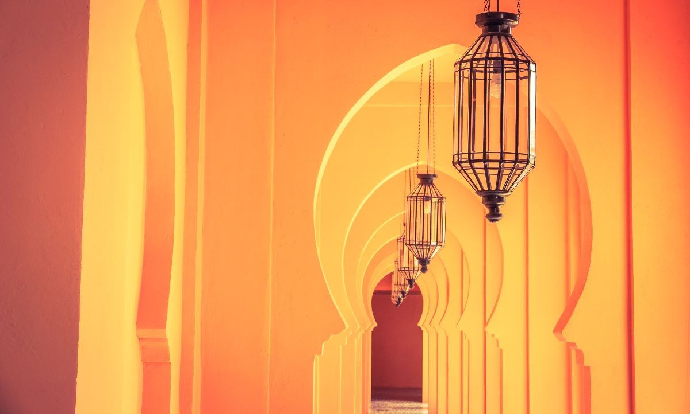
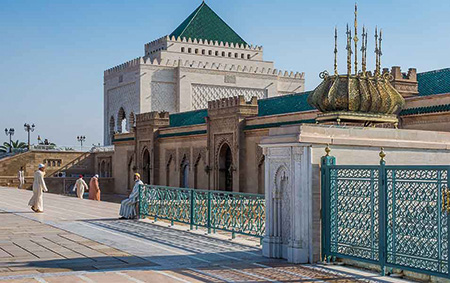

Tipologías de la arquitectura de Marruecos
En la arquitectura de Marruecos hay varias tipologías de construcción que predominan sobre el resto, como verás en tu viaje. Y por su belleza y originalidad se convierten en auténticos monumentos dignos de fotografiar. Son las siguientes:
Palacios Reales: el territorio de Marruecos ha estado siempre conformado por reinos, y eso hizo proliferar las residencias reales. En algunos casos, como palacios de gobierno y vivienda habitual del sultán, y en otros casos como palacios de retiro o estancia temporal. Son conjuntos de grandes dimensiones, formados por distintas construcciones para alojar a la Corte dentro del recinto. Todo ello, perimetrado por una muralla o cerca de seguridad. En su interior no faltan los jardines que dan un toque de frescor natural muy del gusto del Islam .
Palacios o residencias señoriales: a diferencia de los palacios reales, son edificios que se suelen encontrar en plena medina, a veces adosados a otros edificios adyacentes. En ellos, el efecto sorpresa es espectacular: desde fuera, resulta difícil imaginar la grandiosidad que esconde su interior. No obstante, es habitual que su fachada tenga una portada de acceso elegante, a modo de arco triunfal enmarcado en alfiz y ricamente decorado, con un portón de madera acabada de modo exquisito. Su interior suele organizarse en torno a un patio central
Mezquita: se trata de la principal tipología religiosa de la arquitectura de Marruecos, dado que se trata de un Estado islámico, como reconoce su Constitución. Por desgracia, no son visitables, salvo contadas excepciones, pero su arquitectura se puede admirar desde el exterior. Por lo general, son construcciones sobrias, donde el elemento más destacado y decorado es el alminar o minarete, la torre desde donde el imán llama a la oración. En su interior suele haber un patio de abluciones porticado y con fuente en el centro, después una gran sala de oración con un ‘bosque de columnas’, un mihrab o nicho y un púlpito (minbar) habitualmente de madera. Todo ello en el muro de la qibla (a oriente), que indica la dirección que deben adoptar los fieles durante la oración
Otras tipologías religiosas: además de la mezquita, es posible encontrar templos de otras religiones, aunque en número muy reducido. Principalmente iglesias, sobre todo en el norte del país, y alguna sinagoga
Madrasas: son escuelas coránicas para futuros imanes o para la enseñanza islámica a miembros de la alta sociedad. Por ello, son instituciones de gran prestigio. Así se puede ver en la arquitectura de todas ellas, especialmente en las históricas. La decoración cerámica de carácter geométrico suele ser deslumbrante, combinada a menudo con pasajes del Corán en caligrafía cúfica o cursiva, lo cual es un motivo ornamental en sí mismo .
Alcazabas y alcázares: antiguos castillos o fortalezas que, por su posición estratégica, permiten controlar todo su entorno, incluida la medina y las principales vías de acceso. Muy destacables son las fortalezas marítimas, levantadas en plena costa, a menudo sobre elevaciones rocosas que amplifican su impacto visual
Ville Nouveau: en el siglo XX, Marruecos experimentó un gran impulso urbanístico fuera de las murallas de las medinas. Fueron barrios modernistas o ville nouveau, con un marcado estilo neomorisco pero con espacios más racionales, amplios y funcionales, a la moda de los grandes ensanches europeos
Construcciones funerarias: en la arquitectura de Marruecos, otra tipología muy particular es la funeraria, a menudo a modo de gran mausoleo donde reposa la tumba de un soberano o como panteón de diferentes personajes, a menudo ligados a una dinastía monárquica. También cabe citar aquí los llamados morabitos, donde reposan los restos de un ‘santón’ o personaje religioso venerado en una determinada región
Kasbahs y ksars: aunque hemos hecho referencia a las alcazabas y los alcázares más arriba, conviene dedicar un punto y aparte a las kasbahs, pues son una tipología muy original en la arquitectura militar de Marruecos. Las kasbahs son castillos bereberes construidos sobre todo en zonas pre-saharianas, como los valles del Draa o del Ziz, a menudo sobre colinas o montañas. Llaman la atención sus materiales, determinados por el entorno, principalmente adobe, pero también distintas maderas y arena con distintos tratamientos, incluso sin cocer. También son llamativos sus recursos decorativos, a menudo como simples incisiones en el barro o tramas geométricas de ladrillos. Los ksars son recintos fortificados más amplios, a modo de poblados inexpugnables, donde suele haber una kasbah en su punto más elevado
Aljibes: la civilización árabe medieval es reconocida en el mundo como una de las mejores en cuanto a infraestructuras hidráulicas. Sus recurrentes sequías y la permanente escasez de agua obligaron a sus ingenieros a crear soluciones de máxima eficiencia. Ejemplo de ello son los aljibes, depósitos subterráneos en los que se almacenaba el agua de lluvia. Y algunos de ellos se conservan aún en buen estado, mientras que de otros solo nos quedan evidencias arqueológicas
Baños públicos: entre la higiene y el encuentro social, los baños públicos árabes o hammams se inspiran en las termas romanas y son una seña de identidad de la arquitectura árabe y, por supuesto, de la arquitectura de Marruecos.


Elementos y espacios característicos
La arquitectura de Marruecos, al seguir los preceptos Islam, suele respetar una premisa: la parte exterior es sobria, incluso austera y simple, sin intención de mostrar ostentación, mientras que los interiores pueden ser más ricos, tanto en decoración como en materiales. No obstante, predominan aquellos más asequibles como la madera, el yeso, el ladrillo o la cerámica, en sintonía con la idea de que lo único verdaderamente eterno es Alá.
En cuanto a los elementos constructivos, la arquitectura de Marruecos y la musulmana en general se caracteriza por desarrollar una variedad extraordinaria de arcos: de herradura, apuntados, túmidos, lobulados, polilobulados, entrecruzados, peraltados… Y relacionado con la variedad de arcos está la extraordinaria diversidad de cúpulas, que en los palacios alcanzan su cénit en cuanto a riqueza y maestría.
En cuanto a los elementos constructivos, la arquitectura de Marruecos y la musulmana en general se caracteriza por desarrollar una variedad extraordinaria de arcos: de herradura, apuntados, túmidos, lobulados, polilobulados, entrecruzados, peraltados… Y relacionado con la variedad de arcos está la extraordinaria diversidad de cúpulas, que en los palacios alcanzan su cénit en cuanto a riqueza y maestría.
También son muy habituales los pórticos, sobre todo en patios interiores, pues el espacio creado en ellos ofrece una preciada sombra para quienes se desplazan por el conjunto, ya sea una mezquita o un palacio.
Hemos hecho mención a los patios y, sin duda, son uno de los elementos más importantes de la arquitectura de Marruecos. Salvo los patios de abluciones en las mezquitas, donde se instala una única fuente en el centro, en el resto de patios surgen diferentes fuentes y abundante vegetación. Son los llamados riads, lugares que invitan a la pausa, al reposo y a la reflexión. Suelen estar en palacios urbanos de la medina o en viviendas tradicionales, y muchos de ellos se han reconvertido en la actualidad en pequeños hoteles con mucho encanto
Pero sin duda, la tipología que mejor integra la naturaleza en la ciudad son los jardines, muy popularizados en la arquitectura de Marruecos gracias a su concepción divina: son una metáfora del paraíso protegido a los elegidos, donde los colores, las formas y los aromas permiten imaginar lo que les espera en el Más Allá. En ellos, el agua juega un papel fundamental, capaz de aportar frescor, purificación y vida, en definitiva. Puede haber árboles frutales, arbustos de menor tamaño, flores y una larga lista de especies.